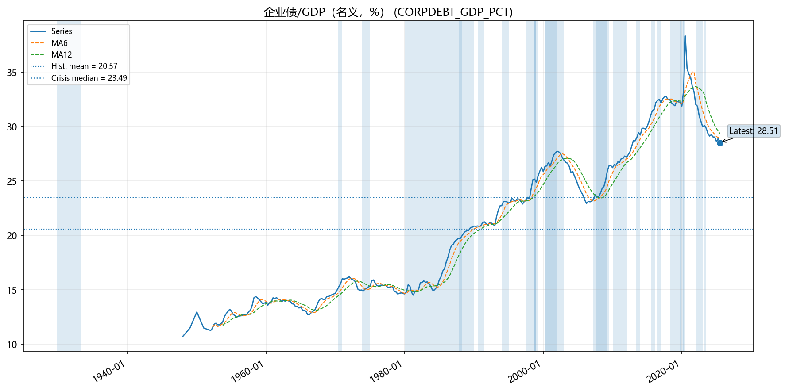
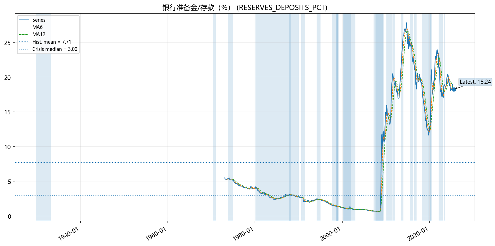
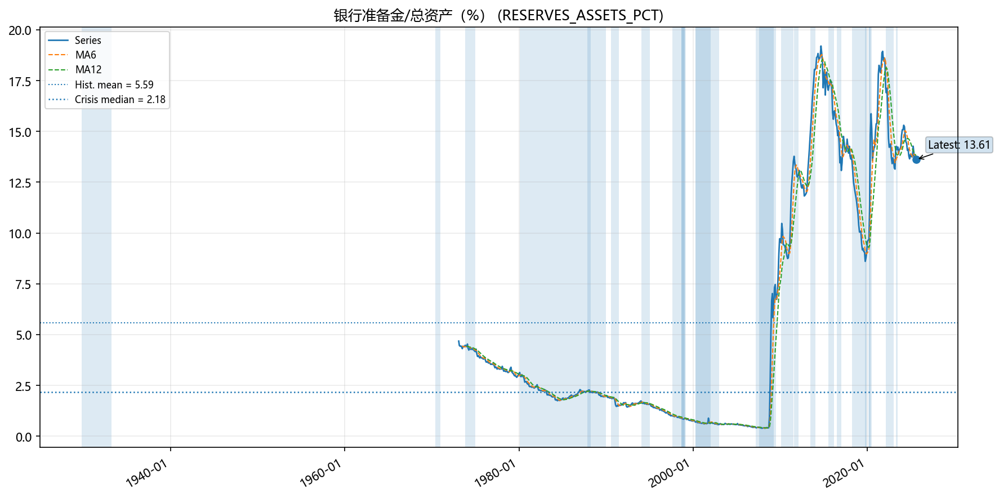

🚨 宏观金融危机监察报告
生成时间: 2025年09月20日 10:27:20
📋 报告说明
本报告基于FRED宏观指标，将当前值与历史危机期间基准值比较，以评估风险。
【数据由人采集和处理，请批判看待这些数据，欢迎email jiangx@gmail.com 任何问题讨论】
风险评分范围 0-100：50 为中性，越高越危险（除非指标设定为'越低越危险'）。
采用分组加权评分：先计算各组平均分，再按权重合成总分。
总分 = ∑(分组平均分 × 分组权重)，分组权重归一处理后合成。
过期数据处理：月频数据>60天、季频数据>120天标记⚠️，过期数据权重×0.9。
颜色分段：0–39 🔵 极低，40–59 🟢 低，60–79 🟡 中，80–100 🔴 高；50 为中性。
🎯 总体风险概览
-
加权风险总分: 45.9/100
-
成功监控指标: 26/26
📊 分组风险评分
-
收益率曲线: 55.4/100 (权重: 14%, 指标数: 2)
-
利率水平: 46.0/100 (权重: 14%, 指标数: 5)
-
信用利差: 38.2/100 (权重: 14%, 指标数: 2)
-
金融状况/波动: 39.4/100 (权重: 9%, 指标数: 2)
-
实体经济: 46.5/100 (权重: 14%, 指标数: 2)
-
房地产: 39.2/100 (权重: 9%, 指标数: 2)
-
消费: 47.9/100 (权重: 7%, 指标数: 1)
-
银行业: 41.5/100 (权重: 6%, 指标数: 2)
-
外部环境: 47.5/100 (权重: 5%, 指标数: 1)
-
杠杆: 56.5/100 (权重: 9%, 指标数: 1)
总体风险等级: 🟢 低风险
🟡 中风险指标
收益率曲线倒挂: 10年期-3个月 (T10Y3M)
- 当前值: -0.02
- 基准值: 0.59 (noncrisis_p25)
- 风险评分: 60.8/100 🟡 中风险
- 偏离度: -0.61
- 历史Z分数: -1.25
- 方向说明: 该指标越低越危险

密歇根消费者信心 (UMCSENT) ⚠️(过期)
- 当前值: 61.7
- 基准值: 87.1 (noncrisis_p35)
- 风险评分: 65.0/100 🟡 中风险
- 偏离度: -25.4
- 历史Z分数: -1.77
- 方向说明: 该指标越低越危险

🟢 低风险指标
收益率曲线倒挂: 10年期-2年期 (T10Y2Y)
- 当前值: 0.5
- 基准值: 0.245 (noncrisis_p25)
- 风险评分: 50.0/100 🟢 低风险
- 偏离度: 0.255
- 历史Z分数: -0.38
- 方向说明: 该指标越低越危险

联邦基金利率 (FEDFUNDS)
- 当前值: 4.33
- 基准值: 5.24 (noncrisis_p75)
- 风险评分: 47.2/100 🟢 低风险
- 偏离度: -0.91
- 历史Z分数: -0.08
- 方向说明: 该指标越高越危险

3个月国债利率 (DTB3)
- 当前值: 3.95
- 基准值: 4.92 (noncrisis_p75)
- 风险评分: 46.6/100 🟢 低风险
- 偏离度: -0.97
- 历史Z分数: -0.08
- 方向说明: 该指标越高越危险

10年期国债利率 (DGS10)
- 当前值: 4.11
- 基准值: 6.03 (noncrisis_p75)
- 风险评分: 42.9/100 🟢 低风险
- 偏离度: -1.92
- 历史Z分数: -0.58
- 方向说明: 该指标越高越危险

30年期抵押贷款利率 (MORTGAGE30US)
- 当前值: 6.35
- 基准值: 7.58 (noncrisis_p75)
- 风险评分: 45.7/100 🟢 低风险
- 偏离度: -1.23
- 历史Z分数: -0.42
- 方向说明: 该指标越高越危险

SOFR隔夜利率 (SOFR)
- 当前值: 4.14
- 基准值: 5.31 (noncrisis_p75)
- 风险评分: 47.8/100 🟢 低风险
- 偏离度: -1.17
- 历史Z分数: 0.76
- 方向说明: 该指标越高越危险

高收益债风险溢价 (BAMLH0A0HYM2)
- 当前值: 2.71
- 基准值: 5.605 (crisis_median)
- 风险评分: 31.8/100 🔵 极低风险
- 偏离度: -2.895
- 历史Z分数: -1.01
- 方向说明: 该指标越高越危险

投资级信用利差: Baa-10Y国债 (BAA10YM)
- 当前值: 1.74
- 基准值: 2.27 (crisis_median)
- 风险评分: 44.7/100 🟢 低风险
- 偏离度: -0.53
- 历史Z分数: -0.21
- 方向说明: 该指标越高越危险

芝加哥金融状况指数 (NFCI)
- 当前值: -0.5638
- 基准值: -0.1859 (noncrisis_p75)
- 风险评分: 42.5/100 🟢 低风险
- 偏离度: -0.3779
- 历史Z分数: -0.56
- 方向说明: 该指标越高越危险

VIX波动率指数 (VIXCLS)
- 当前值: 15.7
- 基准值: 24.452 (noncrisis_p90)
- 风险评分: 36.3/100 🔵 极低风险
- 偏离度: -8.752
- 历史Z分数: -0.51
- 方向说明: 该指标越高越危险

非农就业人数 YoY (PAYEMS)
- 当前值: 0.9274
- 基准值: 0.2504 (crisis_p25)
- 风险评分: 47.4/100 🟢 低风险
- 偏离度: 0.677
- 历史Z分数: -0.35
- 方向说明: 该指标越低越危险

工业生产 YoY (INDPRO)
- 当前值: 0.8743
- 基准值: -3.0452 (crisis_p25)
- 风险评分: 45.6/100 🟢 低风险
- 偏离度: 3.9195
- 历史Z分数: -0.24
- 方向说明: 该指标越低越危险

GDP YoY (GDP) ⚠️(过期)
- 当前值: 4.6083
- 基准值: 3.8535 (crisis_p25)
- 风险评分: 48.3/100 🟢 低风险
- 偏离度: 0.7548
- 历史Z分数: -0.51
- 方向说明: 该指标越低越危险

新屋开工（年化） (HOUST)
- 当前值: 1307.0
- 基准值: 1106.5 (crisis_p25)
- 风险评分: 45.5/100 🟢 低风险
- 偏离度: 200.5
- 历史Z分数: -0.33
- 方向说明: 该指标越低越危险

房价指数: Case-Shiller 20城 YoY (CSUSHPINSA)
- 当前值: 1.888
- 基准值: 13.4911 (noncrisis_p90)
- 风险评分: 33.0/100 🔵 极低风险
- 偏离度: -11.6031
- 历史Z分数: -0.45
- 方向说明: 该指标越高越危险

消费者信贷 YoY (TOTALSA)
- 当前值: 5.4611
- 基准值: 7.6617 (noncrisis_p75)
- 风险评分: 47.9/100 🟢 低风险
- 偏离度: -2.2006
- 历史Z分数: 0.33
- 方向说明: 该指标越高越危险

总贷款与租赁 YoY (TOTLL)
- 当前值: 4.3929
- 基准值: 10.091 (noncrisis_p75)
- 风险评分: 42.1/100 🟢 低风险
- 偏离度: -5.698
- 历史Z分数: -0.53
- 方向说明: 该指标越高越危险

美联储总资产 YoY (WALCL)
- 当前值: -6.6962
- 基准值: 4.2045 (crisis_median)
- 风险评分: 40.9/100 🟢 低风险
- 偏离度: -10.9007
- 历史Z分数: -0.66
- 方向说明: 该指标越高越危险

贸易加权美元指数 YoY (DTWEXBGS)
- 当前值: -0.8552
- 基准值: 0.7721 (noncrisis_median)
- 风险评分: 47.5/100 🟢 低风险
- 偏离度: -1.6272
- 历史Z分数: -0.37
- 方向说明: 该指标越高越危险

企业债/GDP（名义，%） (CORPDEBT_GDP_PCT)
- 当前值: 28.5098
- 基准值: 22.0769 (noncrisis_p65)
- 风险评分: 56.5/100 🟢 低风险
- 偏离度: 6.4329
- 历史Z分数: 1.17
- 方向说明: 该指标越高越危险

银行准备金/存款（%） (RESERVES_DEPOSITS_PCT) ⚠️(过期)
- 当前值: 18.2439
- 基准值: 2.3618 (crisis_p25)
- 风险评分: 40.2/100 🟢 低风险
- 偏离度: 15.8821
- 历史Z分数: 1.31
- 方向说明: 该指标越低越危险

银行准备金/总资产（%） (RESERVES_ASSETS_PCT) ⚠️(过期)
- 当前值: 13.6087
- 基准值: 1.5891 (crisis_p25)
- 风险评分: 40.3/100 🟢 低风险
- 偏离度: 12.0196
- 历史Z分数: 1.37
- 方向说明: 该指标越低越危险

家庭债务偿付比率 (TDSP) ⚠️(过期)
- 当前值: 11.2492
- 基准值: 11.6465 (crisis_median)
- 风险评分: 45.7/100 🟢 低风险
- 偏离度: -0.3973
- 历史Z分数: -0.42
- 方向说明: 该指标越高越危险

房贷违约率 (DRSFRMACBS) ⚠️(过期)
- 当前值: 1.79
- 基准值: 2.54 (crisis_median)
- 风险评分: 45.4/100 🟢 低风险
- 偏离度: -0.75
- 历史Z分数: -0.7
- 方向说明: 该指标越高越危险

📅 历史危机期间参考
- 大萧条 (GD_1929): 1929-10-01 至 1933-03-31
- 1929年股市崩盘引发的大萧条，持续约3.5年
- 商业票据危机/宾州中央铁路 (CP_1970): 1970-05-01 至 1970-12-31
- 宾州中央铁路破产引发的商业票据市场危机
- 石油危机与滞胀 (OIL_7374): 1973-10-01 至 1974-12-31
- 第一次石油危机引发的经济衰退和通胀
- 储贷危机 (SANDL_8089): 1980-01-01 至 1989-12-31
- 储贷机构危机，持续约10年
- 黑色星期一 (CRASH_1987): 1987-10-01 至 1988-03-31
- 1987年10月19日股市崩盘
- 信贷紧缩衰退 (CREDIT_9091): 1990-07-01 至 1991-06-30
- 1990-1991年信贷紧缩引发的经济衰退
- 债券市场危机 (BOND_1994): 1994-01-01 至 1994-12-31
- 1994年债券市场大幅波动
- LTCM/俄罗斯违约 (LTCM_1998): 1998-08-01 至 1999-02-28
- 长期资本管理公司危机和俄罗斯债务违约
- 互联网泡沫破裂 (DOTCOM_2000): 2000-03-01 至 2002-12-31
- 互联网泡沫破裂引发的经济衰退
- 全球金融危机 (GFC_2008): 2007-07-01 至 2009-06-30
- 2008年全球金融危机，雷曼兄弟破产等
- 欧债危机 (EURO_2011): 2011-07-01 至 2012-01-31
- 欧洲主权债务危机
- 美国回购市场危机 (REPO_2019): 2019-09-01 至 2019-10-31
- 2019年9月美国回购市场利率飙升
- 新冠疫情现金争夺 (COVID_2020): 2020-02-15 至 2020-06-30
- 新冠疫情引发的全球金融市场恐慌
- 地区银行压力 (REG_BANK_2023): 2023-03-01 至 2023-06-30
- 2023年硅谷银行等地区银行危机
- 亚洲金融危机 (ASIAN_1997): 1997-07-01 至 1998-12-31
- 1997-1998年亚洲金融危机
- 俄罗斯金融危机 (RUSSIAN_1998): 1998-08-01 至 1998-12-31
- 1998年俄罗斯债务违约和货币危机
- 科技股崩盘 (TECH_2000): 2000-03-01 至 2001-12-31
- 科技股泡沫破裂
- 次贷危机 (SUBPRIME_2007): 2007-02-01 至 2008-09-30
- 次贷危机爆发到雷曼兄弟破产前
- 雷曼兄弟破产 (LEHMAN_2008): 2008-09-01 至 2009-03-31
- 雷曼兄弟破产引发的全球金融恐慌
- 欧债危机初期 (EUROZONE_2010): 2010-01-01 至 2011-06-30
- 希腊债务危机引发的欧债危机初期
- 缩减恐慌 (TAPER_2013): 2013-05-01 至 2013-12-31
- 美联储缩减量化宽松引发的市场恐慌
- 中国股市崩盘 (CHINA_2015): 2015-06-01 至 2016-02-29
- 中国股市大幅下跌引发的全球市场波动
- 英国脱欧 (BREXIT_2016): 2016-06-01 至 2016-12-31
- 英国脱欧公投引发的市场波动
- 贸易战 (TRADE_WAR_2018): 2018-03-01 至 2019-12-31
- 中美贸易战引发的市场不确定性
- 疫情初期 (PANDEMIC_2020): 2020-01-01 至 2020-04-30
- 新冠疫情初期引发的市场恐慌
- 通胀飙升 (INFLATION_2022): 2022-01-01 至 2022-12-31
- 2022年通胀快速上升引发的市场调整
⚠️ 免责声明
本报告仅供参考，不构成投资建议。历史数据不保证未来表现。
📋 指标配置表
| 指标名称 | 分组 | 基准分位 | 基准理由 | 变换方法 | 计分方式 |
|---|---|---|---|---|---|
| 收益率曲线倒挂: 10年期-3个月 | rates_curve | noncrisis_p25 | 收益率曲线倒挂越深越危险，使用非危机期间25%分位数作为警戒线 | level | 按组平均 |
| 收益率曲线倒挂: 10年期-2年期 | rates_curve | noncrisis_p25 | 收益率曲线倒挂越深越危险，使用非危机期间25%分位数作为警戒线 | level | 按组平均 |
| 联邦基金利率 | rates_level | noncrisis_p75 | 利率水平过高会抑制经济活动，使用非危机期间75%分位数作为警戒线 | level | 按组平均 |
| 3个月国债利率 | rates_level | noncrisis_p75 | 短期利率过高会抑制经济活动，使用非危机期间75%分位数作为警戒线 | level | 按组平均 |
| 10年期国债利率 | rates_level | noncrisis_p75 | 长期利率过高会抑制投资和消费，使用非危机期间75%分位数作为警戒线 | level | 按组平均 |
| 30年期抵押贷款利率 | rates_level | noncrisis_p75 | 抵押贷款利率过高会抑制房地产需求，使用非危机期间75%分位数作为警戒线 | level | 按组平均 |
| SOFR隔夜利率 | rates_level | noncrisis_p75 | 隔夜利率过高反映资金紧张，使用非危机期间75%分位数作为警戒线 | level | 按组平均 |
| 高收益债风险溢价 | credit_spreads | crisis_median | 高收益债利差扩大反映信用风险上升，使用历史危机期间中位数作为警戒线 | level | 按组平均 |
| 投资级信用利差: Baa-10Y国债 | credit_spreads | crisis_median | 投资级信用利差扩大反映企业信用风险上升，使用历史危机期间中位数作为警戒线 | level | 按组平均 |
| 芝加哥金融状况指数 | fin_cond_vol | noncrisis_p75 | 金融状况指数上升反映金融市场压力增大，使用非危机期间75%分位数作为警戒线 | level | 按组平均 |
| VIX波动率指数 | fin_cond_vol | noncrisis_p90 | VIX波动率指数上升反映市场恐慌情绪加剧，使用非危机期间90%分位数作为警戒线 | level | 按组平均 |
| 非农就业人数 YoY | real_economy | crisis_p25 | 就业增长放缓反映经济疲软，使用历史危机期间25%分位数作为警戒线 | yoy_pct | 按组平均 |
| 工业生产 YoY | real_economy | crisis_p25 | 工业生产增长放缓反映制造业疲软，使用历史危机期间25%分位数作为警戒线 | yoy_pct | 按组平均 |
| GDP YoY | real_economy | crisis_p25 | GDP增长放缓反映整体经济疲软，使用历史危机期间25%分位数作为警戒线 | yoy_pct | 按组平均 |
| 新屋开工（年化） | housing | crisis_p25 | 新屋开工数量（千套年化）下降反映房地产投资疲软，使用历史危机期间25%分位数作为警戒线 | level | 按组平均 |
| 房价指数: Case-Shiller 20城 YoY | housing | noncrisis_p90 | 房价过快上涨可能引发泡沫风险，使用非危机期间90%分位数作为泡沫警戒线 | yoy_pct | 按组平均 |
| 密歇根消费者信心 | consumers | noncrisis_p35 | 消费者信心下降反映消费意愿减弱，使用非危机期间35%分位数作为警戒线（调紧） | level | 按组平均 |
| 消费者信贷 YoY | consumers | noncrisis_p75 | 消费者信贷同比增速过高可能引发债务风险，使用非危机期间75%分位数作为警戒线 | yoy_pct | 按组平均 |
| 总贷款与租赁 YoY | banking | noncrisis_p75 | 银行贷款同比增速过高可能引发信贷风险，使用非危机期间75%分位数作为警戒线 | yoy_pct | 按组平均 |
| 美联储总资产 YoY | banking | crisis_median | 美联储资产过快扩张反映货币政策过度宽松，使用历史危机期间中位数作为警戒线 | yoy_pct | 按组平均 |
| 贸易加权美元指数 YoY | external | noncrisis_median | 美元快速走强常伴随紧缩政策和风险偏好走弱，使用非危机期间中位数作为警戒线 | yoy_pct | 按组平均 |
| 企业债/GDP（名义，%） | leverage | noncrisis_p65 | 名义企业债/名义GDP（%），频率对齐（常为季度），使用季度同比/期对比保持口径一致，企业杠杆水平过高会增加债务风险 | level | 按组平均 |
| 银行准备金/存款（%） | banking | crisis_p25 | 银行准备金过低会降低流动性缓冲，使用历史危机期间25%分位数作为警戒线 | level | 按组平均 |
| 银行准备金/总资产（%） | banking | crisis_p25 | 银行准备金过低会降低流动性缓冲，使用历史危机期间25%分位数作为警戒线 | level | 按组平均 |
| 家庭债务偿付比率 | consumers | crisis_median | 家庭债务偿付比率过高会增加违约风险，使用历史危机期间中位数作为警戒线 | level | 按组平均 |
| 房贷违约率 | housing | crisis_median | 房贷违约率上升反映房地产市场压力增大，使用历史危机期间中位数作为警戒线 | level | 按组平均 |
📖 基准分位解释
| 基准分位 | 含义 | 使用场景 |
|---|---|---|
| noncrisis_p25 | 非危机期间25%分位数（较低值） | 收益率曲线倒挂、消费者信心等'越低越危险'指标 |
| noncrisis_p75 | 非危机期间75%分位数（较高值） | 利率水平、信用利差等'越高越危险'指标 |
| noncrisis_p90 | 非危机期间90%分位数（很高值） | VIX波动率等需要更灵敏捕捉抬升的指标 |
| crisis_median | 历史危机期间中位数 | 信用利差、金融状况指数等危机敏感指标 |
| crisis_p25 | 历史危机期间25%分位数 | 实体经济指标（就业、GDP等）'越低越危险' |
| noncrisis_median | 非危机期间中位数 | 美元指数等中性指标 |
说明： - p25/p75/p90：表示历史数据中25%/75%/90%的观测值低于该水平 - noncrisis：排除历史危机期间的数据，反映'正常'经济环境 - crisis：仅使用历史危机期间的数据，反映'危险'水平
📅 危机窗口定义
本报告使用的历史危机期间包括： - 大萧条: 1929-10-01 至 1933-03-31 - 商业票据危机/宾州中央铁路: 1970-05-01 至 1970-12-31 - 石油危机与滞胀: 1973-10-01 至 1974-12-31 - 储贷危机: 1980-01-01 至 1989-12-31 - 黑色星期一: 1987-10-01 至 1988-03-31 - 信贷紧缩衰退: 1990-07-01 至 1991-06-30 - 债券市场危机: 1994-01-01 至 1994-12-31 - LTCM/俄罗斯违约: 1998-08-01 至 1999-02-28 - 互联网泡沫破裂: 2000-03-01 至 2002-12-31 - 全球金融危机: 2007-07-01 至 2009-06-30 - 欧债危机: 2011-07-01 至 2012-01-31 - 美国回购市场危机: 2019-09-01 至 2019-10-31 - 新冠疫情现金争夺: 2020-02-15 至 2020-06-30 - 地区银行压力: 2023-03-01 至 2023-06-30 - 亚洲金融危机: 1997-07-01 至 1998-12-31 - 俄罗斯金融危机: 1998-08-01 至 1998-12-31 - 科技股崩盘: 2000-03-01 至 2001-12-31 - 次贷危机: 2007-02-01 至 2008-09-30 - 雷曼兄弟破产: 2008-09-01 至 2009-03-31 - 欧债危机初期: 2010-01-01 至 2011-06-30 - 缩减恐慌: 2013-05-01 至 2013-12-31 - 中国股市崩盘: 2015-06-01 至 2016-02-29 - 英国脱欧: 2016-06-01 至 2016-12-31 - 贸易战: 2018-03-01 至 2019-12-31 - 疫情初期: 2020-01-01 至 2020-04-30 - 通胀飙升: 2022-01-01 至 2022-12-31
本报告基于FRED数据，仅供参考，不构成投资建议